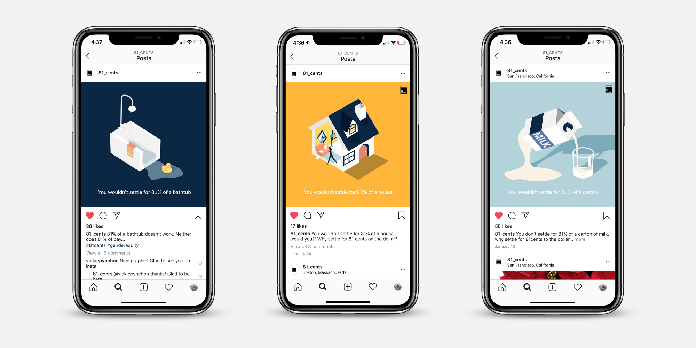
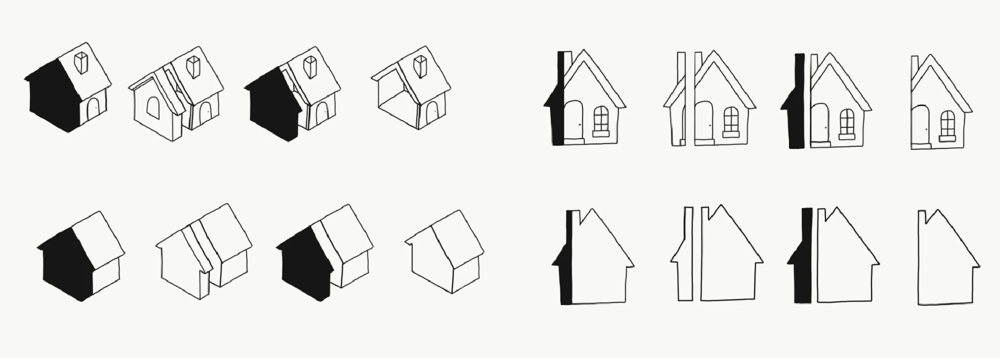
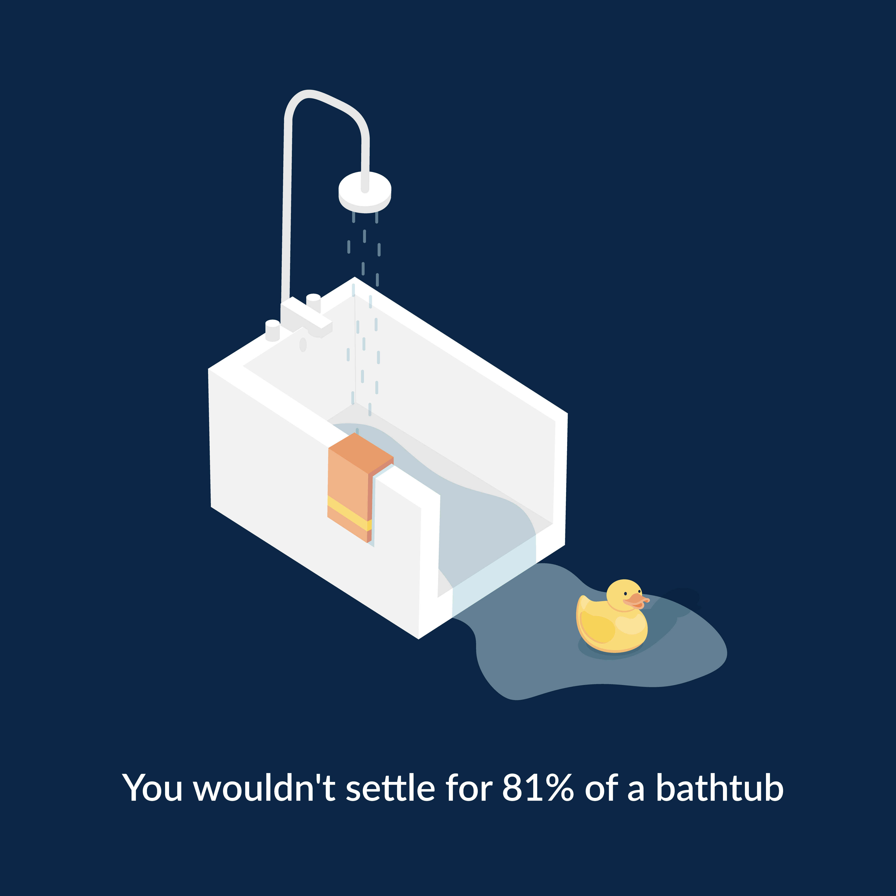
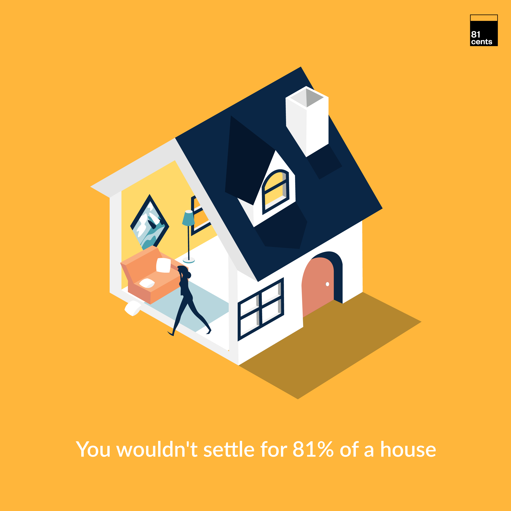
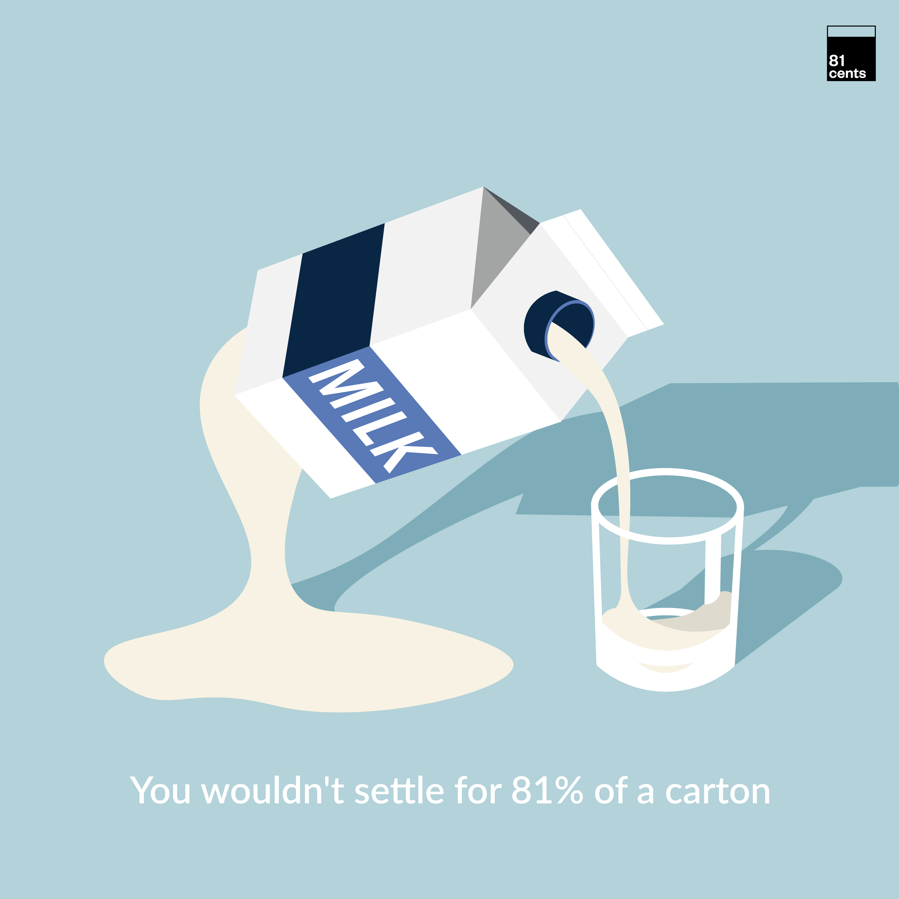

Internship — 2019 to 2020
81cents

81cents is offers low-cost, success-based promotion, raise, and salary negotiation support, just for women and underrepresented groups. As a design intern, I worked on a fresh rebranding of the company with a new set of colors, slide deck and site layouts, and social graphics.
Due to NDA restrictions, I am unable to disclose all visual details and processes of my projects. Please contact me for more information at tiffanytnguy.berkeley.edu.
Due to NDA restrictions, I am unable to disclose all visual details and processes of my projects. Please contact me for more information at tiffanytnguy.berkeley.edu.
Role
Design Intern
Team
Individual
Tools
Adobe IllustratorAdobe Draw
Timeline
1 year, 2019 to 2020
Overview
What did I do?
— Revised client reports & slide decks to better illustrate & synthesize data & information to over 200 clients & stakeholders.
— Explored & illustrated visual concepts to increase presence on Instagram (+200) & LinkedIn (+700).
— Redesigned brand, applying new assets & layouts for the site - 81cents.com.
— Identified the current usability problems through user research & explored alternative user flows to enhance the customer check-out experience on the site.
— Explored & illustrated visual concepts to increase presence on Instagram (+200) & LinkedIn (+700).
— Redesigned brand, applying new assets & layouts for the site - 81cents.com.
— Identified the current usability problems through user research & explored alternative user flows to enhance the customer check-out experience on the site.
Social Graphics
One of the first projects I worked on was to create a new set of social graphics, making aware the huge gender pay gap to our social platform audiences.
The concept we went with was 81% of something, having text below the image — “We wouldn’t accept 81% of ___ so why do we accept 81% of pay?”
By posting jarring and quirky illustrations of an image sliced with only 81% remaining, audiences would see the detrimental effects of having an 81% out of 100% salary.
By posting jarring and quirky illustrations of an image sliced with only 81% remaining, audiences would see the detrimental effects of having an 81% out of 100% salary.

When drafting the first concept's intital ideas, I explored alternative viewpoints to illustrate a sliced house, offering two and three dimensional perspectives.
Final
To convey our concept, we went with three dimensional items since it showed the "emptiness" of having 81% out of the 100%. Adding the original branding colors and font, here's the final series.



Outcome
Being part of 81cents was my first internship and am grateful that I worked with a company that had the same values as me. I've learned greatly about gender and community disparities, early-stage startup culture, and negotiation — I even negotiated my initial offer with great teachings given by my team. I'd like to thank Jordan Sale, Lisa Shek, and Grace Lin for being such a supportive and strong group of women as I was in a explorative period of my career!